全局对象的分析
全局对象的构造
通过调用堆栈查看调用过程
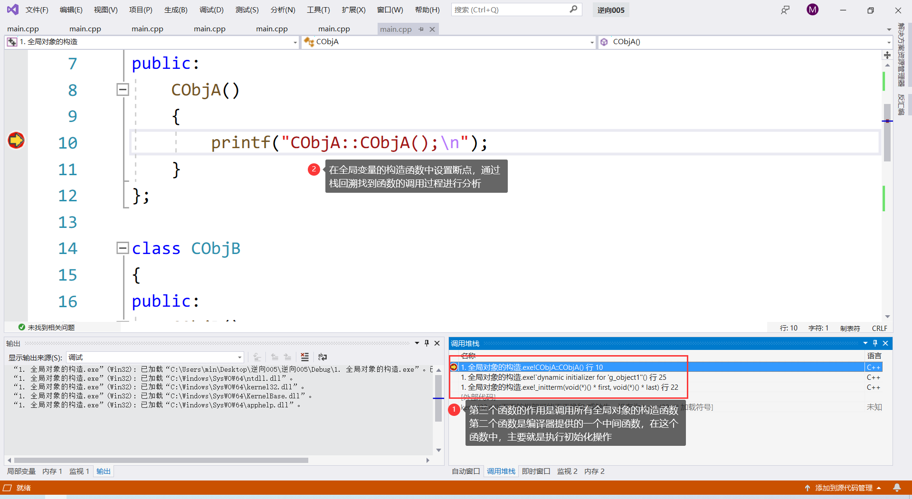
_initterm 函数的源码
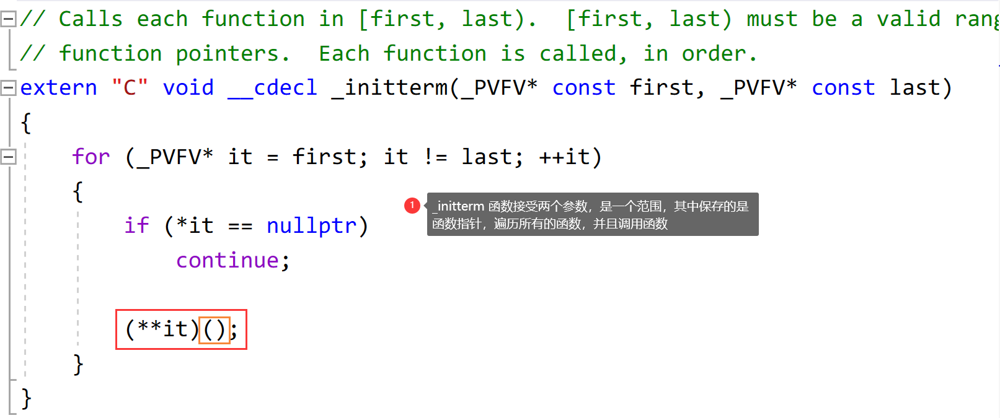
_initterm 函数的汇编
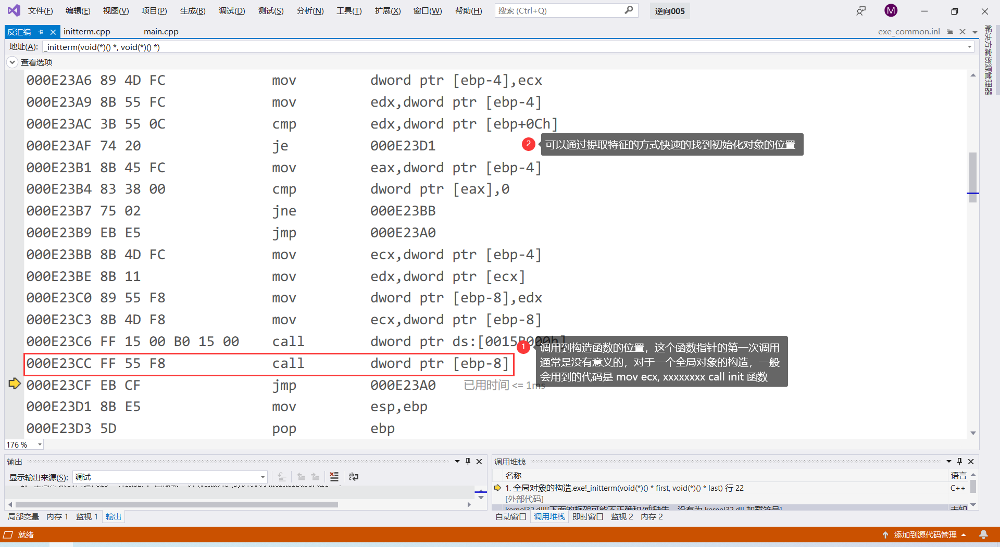
_initterm 函数的调用位置（源码）
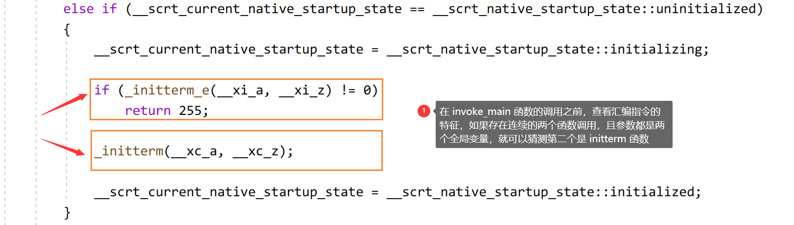
_initterm 函数的调用位置（汇编）
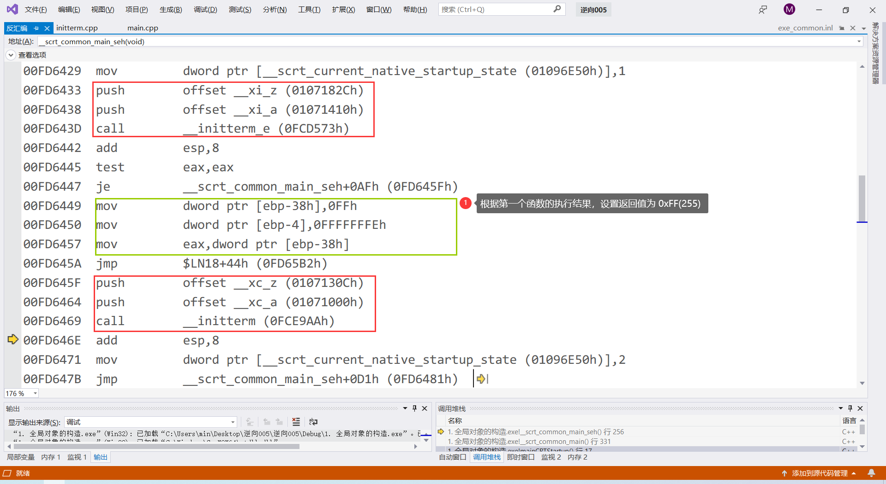
提取 initterm 中调用初始化函数位置的特征
1 | 8B 4D FC 8B 11 89 55 F8 8B 4D F8 FF 15 ?? ?? ?? ?? FF 55 F8 EB CF |
在 C:\Program Files (x86)\Windows Kits\10\Source\SDK版本\ucrt\startup 下可以查看源码
全局对象的析构
通过栈回溯查看调用过程
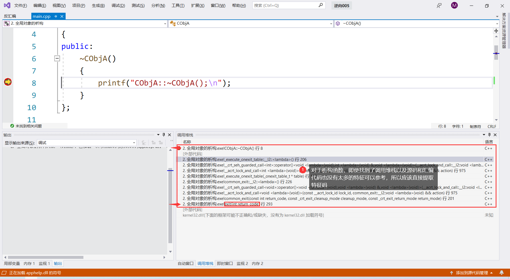
析构函数调用的源头
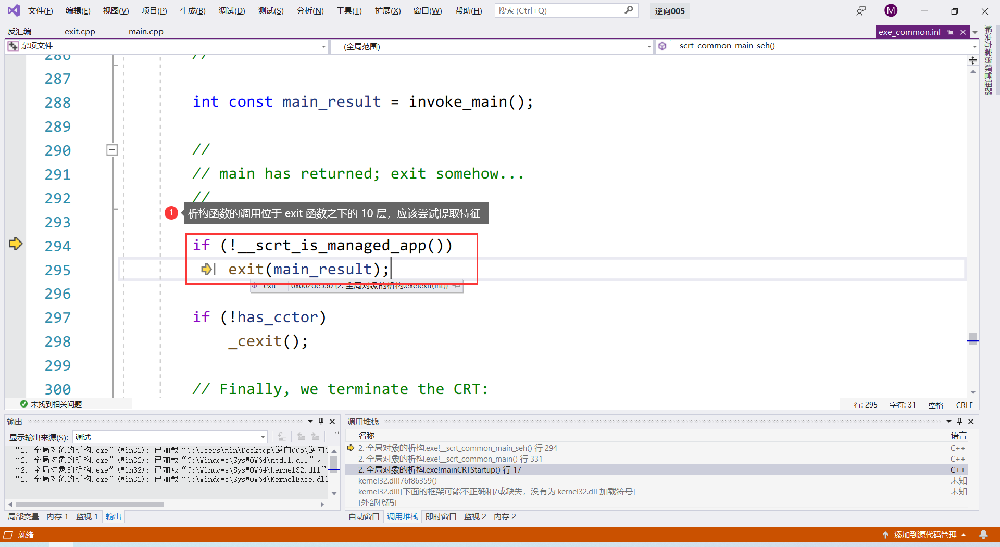
调用释放函数的汇编
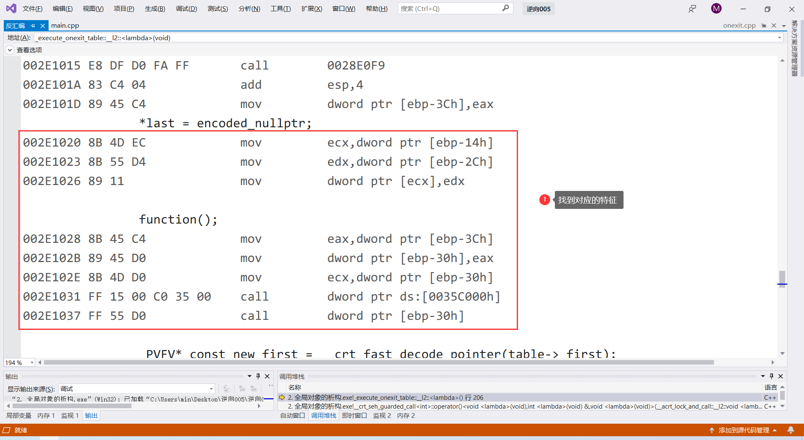
特征码
1 | 89 45 C4 8B 4D EC 8B 55 D4 89 11 8B 45 C4 89 45 D0 8B 4D D0 FF 15 ?? ?? ?? ?? FF 55 D0 |
全局对象的操作
无论是构造还是析构，对于全局变量，操作的指令通常都是 mov ecx, 0x????????
如果是局部变量，操作方式通常是 lea ecx, [ebp - 0x??]，需要进行区分
数据结构分析
字符串分析
CString 对象，占用了 4 字节的大小，使用之前需要先初始化空间再调用构造函数
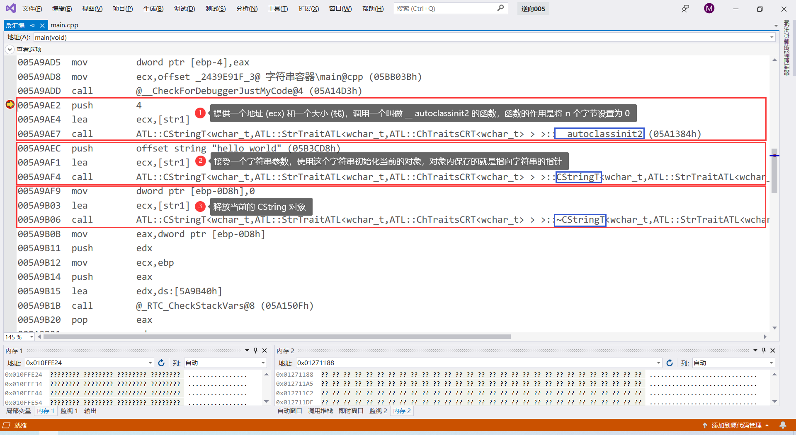
string 对象： 大小是 1C
1 | struct my_string |
vector分析
vector 的调用过程
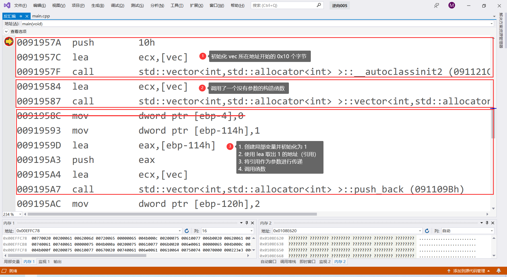
对应的数据结构，大小是 0x10
1 | template<class T> |
list 分析
list 的调用过程
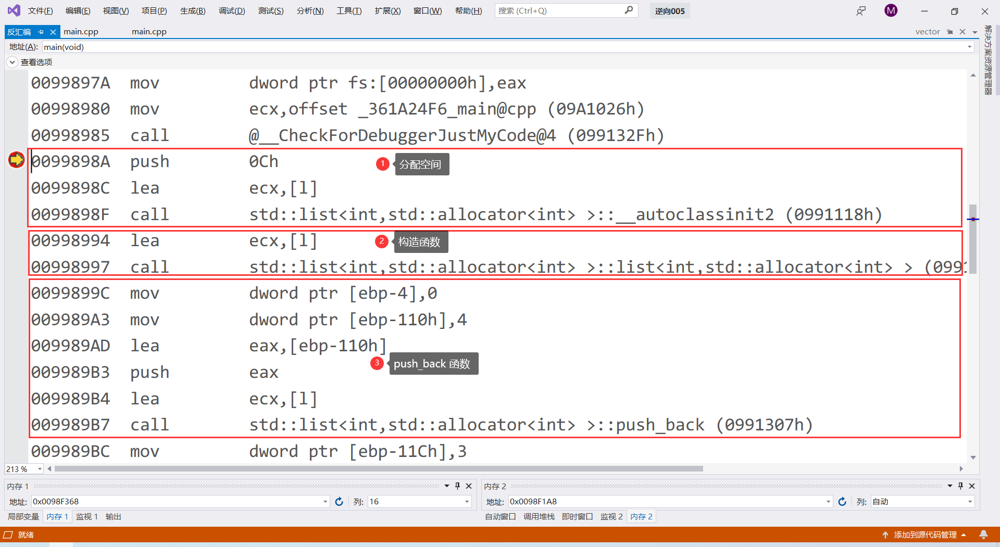
list 的数据结构： 大小是 0x0c
1 | template <class T> |
map 分析
不要纠结
1 | // map 的实现是一个红黑树 |
迭代器分析
如何获取一个迭代器：初始化迭代器 + 将迭代器作为参数调用 begin 之类的函数
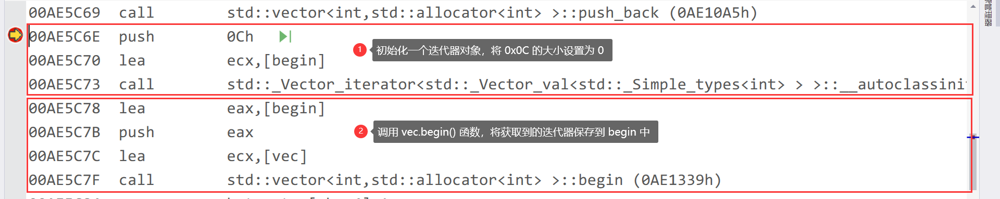
执行 beign++ 操作
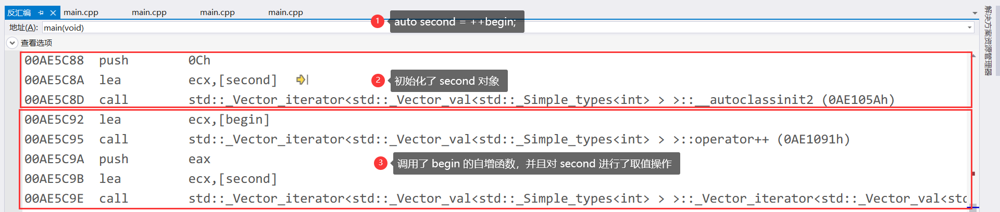
迭代器的数据结构：大小是 0x0C
1 | template <class T> |
MFC程序的分析
直接的获取到特征码： 不同版本的 VS 对应的特征码不同，所以需要自己分析，不同的事件对应的特征码也是不同。
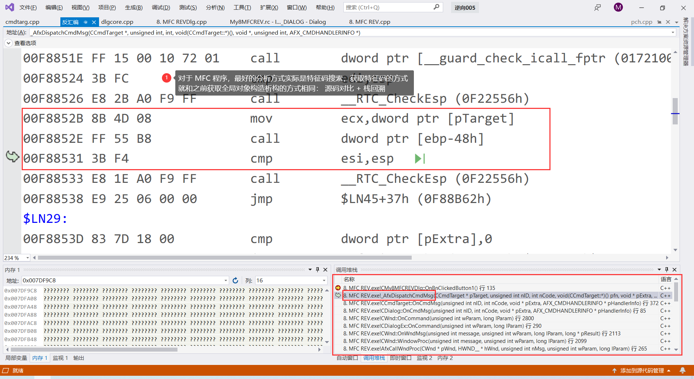
特征码：
1 | VS19-按钮: 8B 4D 08 FF 55 B8 3B F4 |
MFC002 程序中的一部分逻辑
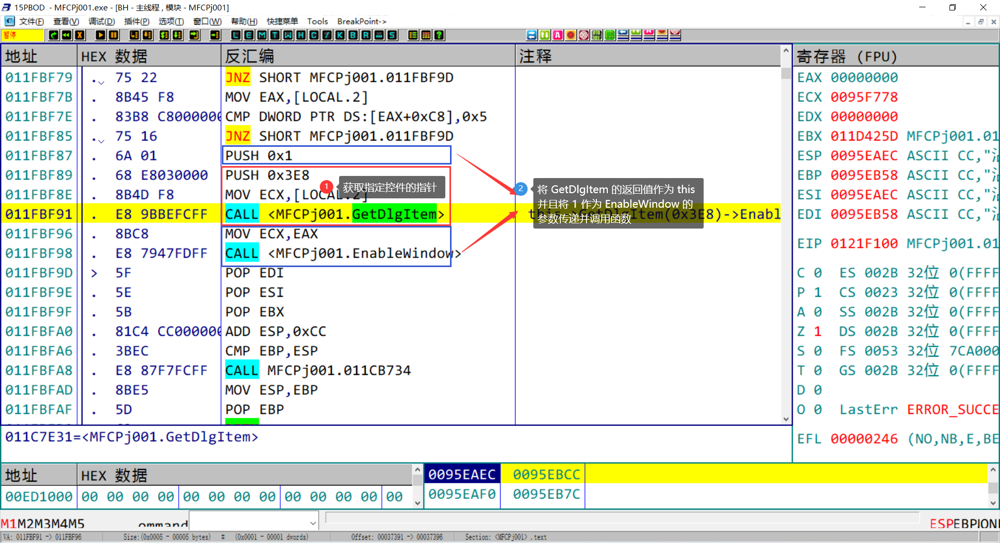